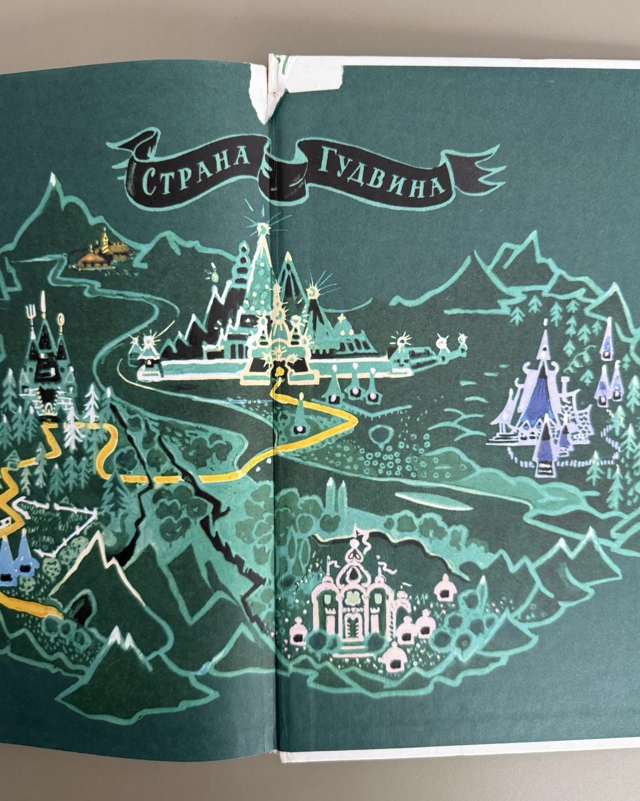

BOOK 001 · ОДИН ЭКЗЕМПЛЯР

♡ любимая книжка, которая ищет нового читателя
Волшебник Изумрудного города
Иллюстрации Леонида Владимирского
€5
1 экземпляр
6–10 летна русскомтвёрдая обложка
▶
Послушать, как всё начинаетсяпервая страница вслух
Полистай внутри · послушай, как всё начинается · хочешь узнать, что дальше — забери себе.
истории от ребёнка к ребёнкуПолистай внутри
Как если бы книга лежала перед тобой на столе
Почему именно эта
Одна из самых любимых книг моего детства
Меня совершенно увлекали приключения — хотелось читать дальше и дальше. Я много раз перечитывала весь цикл. И для меня были очень важны именно иллюстрации Леонида Владимирского: с другими картинками это уже была как будто не совсем та книга.
Что ты увидишь внутри
Много текста, но и много мира
Это уже настоящая книга для самостоятельного чтения: большие главы, классический набор текста и иллюстрации, которые появляются по ходу истории и буквально собирают Изумрудный город вокруг читателя.
Послушай, как всё начинается
Первая страница вслух — чтобы почувствовать язык и ритм
Загляни внутрь
Все фото — именно этого экземпляра
Состояние этого экземпляра
Хорошее
честно показано на фото
- чистые страницы
- без рисунков и пометок
- есть следы времени на обложке и уголках
- небольшой надрыв склейки на заднем форзаце

нажми, чтобы рассмотреть дефектИстория идёт дальше
Книга, которую уже читали, любили — и теперь передают следующему читателю.
BOOK 001 · ONE COPY
Забрать эту историю себе
«Волшебник Изумрудного города» · €5
Продолжить к оплате · €5Пока это демонстрация. На следующем этапе сюда подключим настоящий checkout.
Книжки для детей на русском языке · Лимассол, Кипр